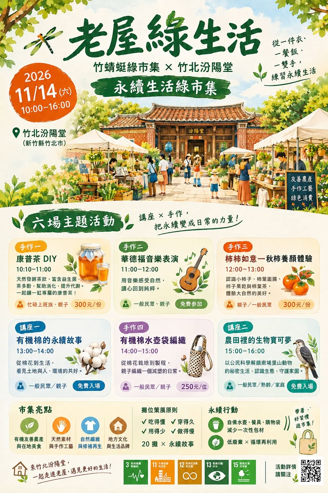

📌活動資訊
• 日期｜2026年11月14日（六）
• 時間｜上午10:00－下午4:00
• 地點｜新竹縣竹北汾陽堂
• 活動｜綠生活市集、主題講座、手作體驗、音樂演出
• 體驗活動報名｜https://forms.gle/QBRNhf5Ns9aE9Mxj7
• 市集自由參觀，部分手作活動酌收材料費
🌿 老屋綠生活｜竹蜻蜓綠市集 × 竹北汾陽堂
從一件衣、一餐飯、一雙手，練習永續生活。
一座老屋，可以承載多少生活的記憶？
一場市集，又能讓我們重新發現多少與土地相處的智慧？
今年11月，正逢竹蜻蜓綠市集17周年，我們特別走出熟悉的清華大學成功湖畔，來到充滿歷史韻味的竹北汾陽堂，舉辦一場不太一樣的綠市集。
我們相信，地方文化不只是被保存的歷史，更是可以繼續使用、體驗與傳承的生活智慧。
這一天，我們邀請友善土地的農友、生活手作者、地方職人與大家相聚老屋，從食物、衣物、手作到里山生態，一起探索永續生活的各種可能。
🌱 六場精彩活動，邀請您一起參與！
🍹 10:10–11:00｜微醺不是酒——康普茶的發酵魔法
跟著「蓋兒手釀」，認識天然發酵茶飲，親手製作屬於自己的康普茶，感受微氣泡與果酸茶香的迷人滋味。
▸ DIY體驗：300元／份
🎶 11:00–12:00｜老屋裡的音樂時光
邀請承光華德福G6B學生帶來音樂演出。讓悠揚樂聲流轉在老屋之間，為秋日午後留下溫暖的記憶。
▸ 免費入座
🍂 12:00–13:00｜柿柿如意——秋柿養顏體驗
秋天，是柿子成熟的季節。邀請深耕在地的「柿藥園」，帶領大家重新認識柿子，品嘗柿子果乾、柿葉茶，體驗柿葉面膜，發現一棵柿樹的多元生活用途。
▸ 體驗費：300元／份
👕 13:00–14:00｜有機棉的永續故事
一件衣服，與土地有什麼關係？
從棉花種植、農藥使用到有機棉的選擇，邀請「藍天大地」分享有機棉背後的環境故事。原來，穿在身上的衣服，也是一種對土地的選擇。
▸ 免費入場
🧶 14:00–15:00｜有機棉水壺袋編織
用一雙手，編織一件可以長久陪伴生活的小物。跟著藍天大地一起認識天然纖維，親手完成有機棉水壺袋，讓重複使用成為日常習慣。
▸ 手作體驗：250元／位
🦉 15:00–16:00｜農田裡的生物寶可夢：以公民科學解鎖南埔里山動物秘密生活
農田裡，除了農作物，還住著哪些神祕鄰居？
邀請南埔社區發展協會產業營運經理張依貝，透過自動相機拍攝的珍貴影像，帶我們認識黑翅鳶、穿山甲、食蟹獴等淺山動物，探索農業生產與野生動物共存的可能。
還有有趣的里山動物客語小教室！
▸ 免費入場
🌾 逛市集，也是一次與土地的相遇
除了講座、手作與音樂演出，現場還有有機友善農產、自然加工食品與生活工藝。
我們希望，每一個攤位不只是販售商品，也能分享一段生產者與土地的故事。在這裡，放慢腳步，和農友聊聊天，認識食物從哪裡來；看看一件手作品背後的材料與心意。
也歡迎自備水壺、餐具與購物袋，一起減少不必要的浪費。